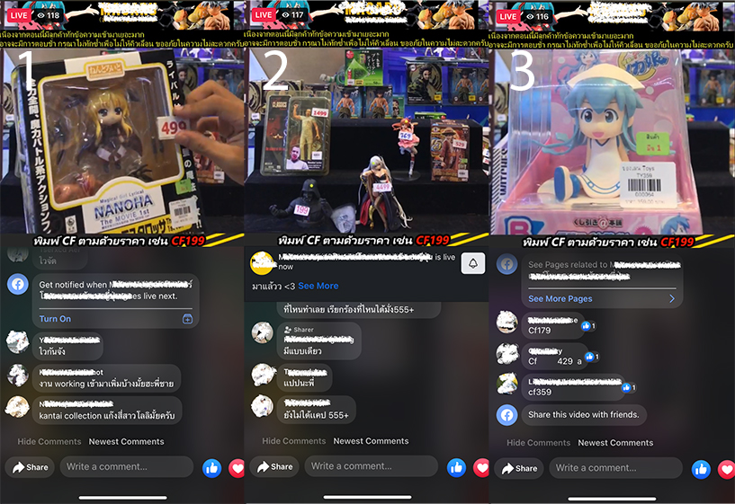
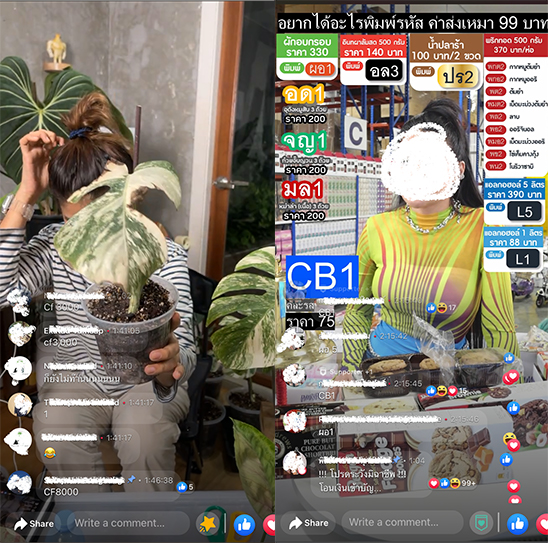

Facebook Live was lauched in August 2015 and limted to celebities. It was later lauched globally to public February in the next year. According to the official website, Facebook live is “a way for creators to connect to their audience and follows in real time”, but it does not stop there. Broadcasting live has opened the door for shops and merchants to sell their goods, real time.
“I CFed [a bag] on from abcxxx Page last night.” – such a statement is a conversation between friends and colleages in Thailand. Recently, I just entered to this CF world myself. I found this to be an interesting online shopping behavior. I heard that Taiwaneses also have something similar, but generally it is quite an unique Thai shopping culture.
Recently, I have introduced myself to the world of CF culture. CF is the abbreviation for confirm. Theis means the customer confirms the order and is ready to make a payment, just waiting for the merchant to summarize the price. Each page usually have their own way of doing this. For example, the Page that I just CFed an anime figure, they do it in a super quick and dynamic way. 
Based on my observations, Facebook Live is used for selling unique items that there is only a few pieces, like my anime figure or trees. Yes, people also CF for THB 8,000 (approx. $230) on a Facebook Live. Commonalities like shower gels, instant coffee, or perfumes are sold on Facebook Live with very special discounts for a limited number.

While Facebook Live can help Pages and Merchants quickly sell their products, as well as promoting their Page, the admin work is a hard work. For my anime figure, I waited for a day before the Page admin contacted me for payment and another day (maybe two, I’m still waiting) for them to proceed with the shipping. I believe that this is because everything is done manually with only a few admin. It is quite labourous considering the admin having to go through a Live and check all the comments and messages before summarizing an order. If I order several items on different days, the admin refuse to combine all the orders together. I guess it is too confusing for them.
The page I CFed my anime figure only have a little but more than hundred people watching and CF for itms. For pages with larger sales, it is impossible to manage order manually. Technology is used for order management. As shown above in the right picture, viewers make order not using just a CF. Instead, special codes are used to tell an automatic system about incoming orders. Viewers seem to naturally learn how to use them without problems.
All in all, it is quite interesting to see users have turned and twisted Facebook to something beyond what Facebook is originally designed to do. It is up to Facebook to decide to take this opportunity by themselves or let third party startups do it. This depends on how big this CF culture goes.